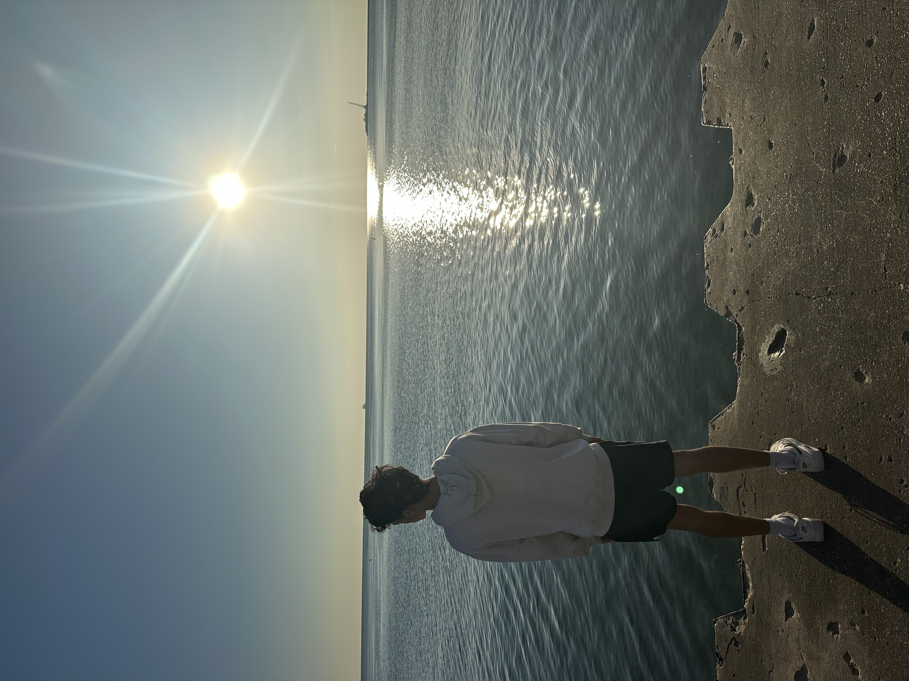
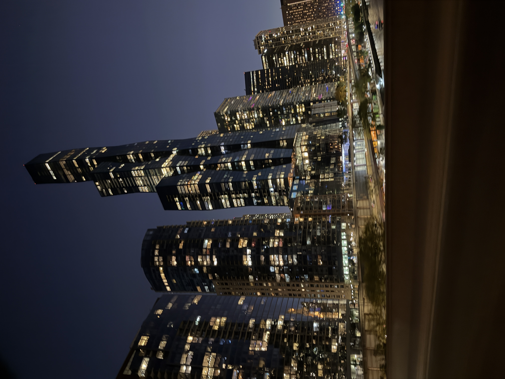

Engineering Club
One of my main hobbies is participating in the engineering club at my school. We work on various projects, from designing and building small robots to constructing model bridges. It's a great way to apply theoretical knowledge to practical problems and collaborate with a team.

This photo shows me and my teammates working on a go-kart project. We spent countless hours designing, fabricating, and assembling this vehicle, learning a lot about mechanical engineering and teamwork in the process.
Photography
I also have a passion for photography. I enjoy capturing moments, landscapes, and urban scenes. It allows me to see the world from a different perspective and express my creativity through visual storytelling.
This image captures the beautiful senior sunrise event. I love how photography can freeze such memorable moments in time, allowing us to revisit them later.
Another one of my favorite shots is this city skyline at night. The vibrant lights and dynamic architecture make for a captivating subject.
Reading and Learning
Beyond practical activities, I spend a good portion of my free time reading and continuously learning. Whether it's diving into a new programming book, exploring historical events, or keeping up with the latest technological advancements, I believe in constant self-improvement.

Here's a candid shot of me engrossed in a book. I find immense joy in expanding my knowledge and understanding of various subjects.